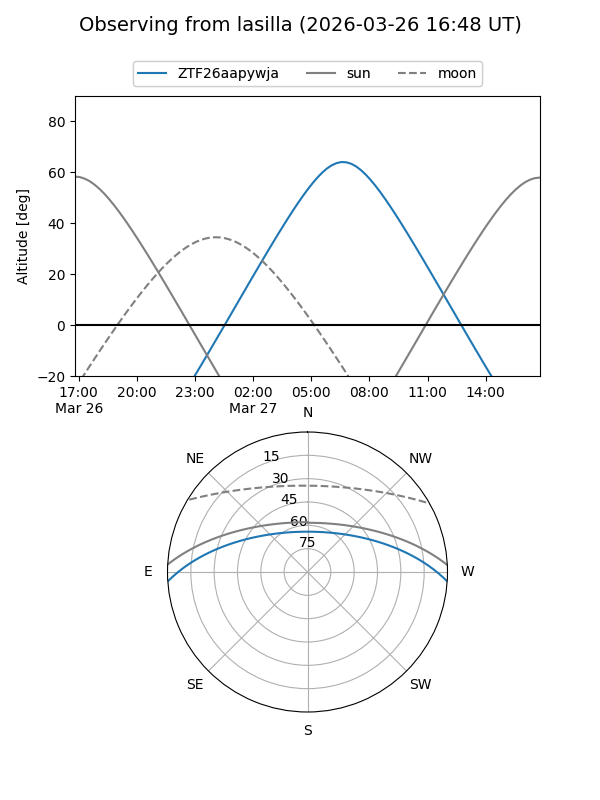
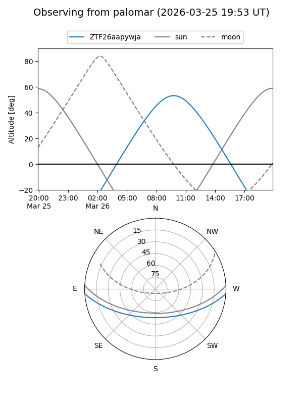

ZTF26aapywja
Target ZTF26aapywja at 2026-03-26 09:49
Aliases and brokers:
FINK: link
Lasair: link
ALeRCE: link
alt names
ZTF26aapywja (ztf,fink_ztf)
Coordinates:
equatorial (ra, dec) = 213.1853,-3.20684
equatorial (HMS+DMS) = 14:12:44.48,-03:12:24.62
galactic (l, b) = (338.9686,+53.87723)
Flags:
Photometry:
last ztfg=19.62
1 ztfg detections
Lightcurve
Visibility


Additional plots